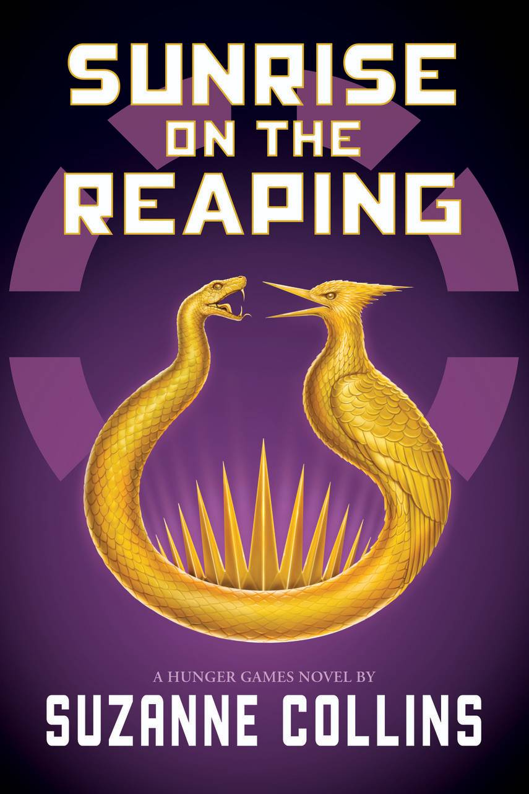
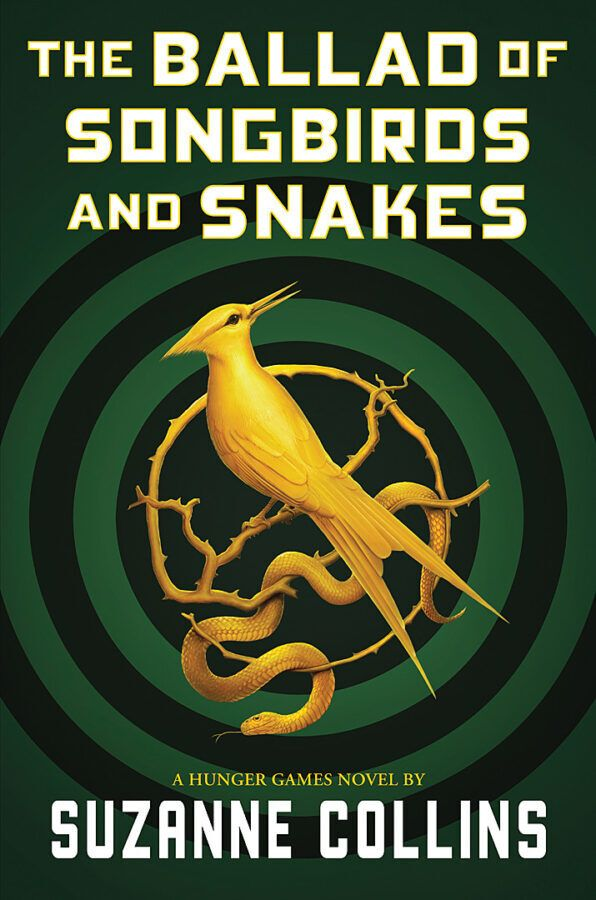
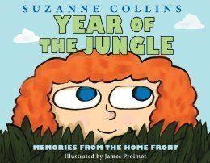
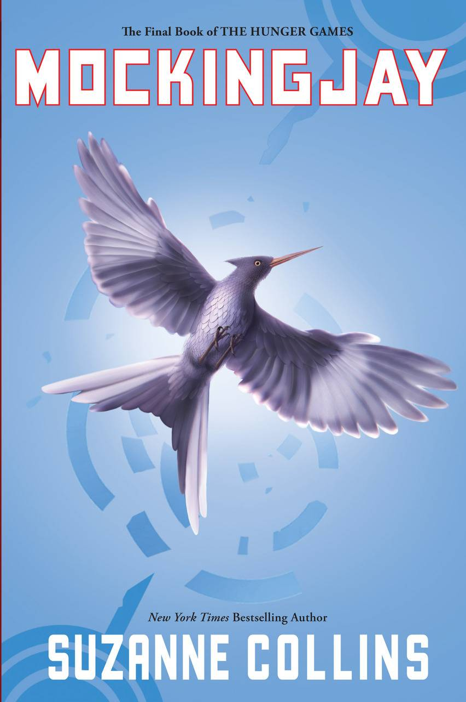
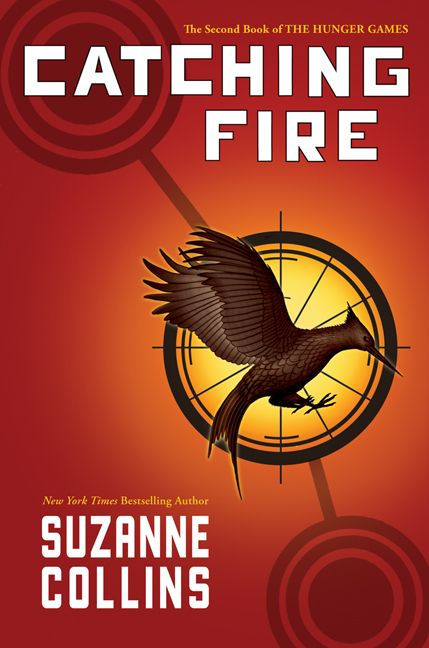
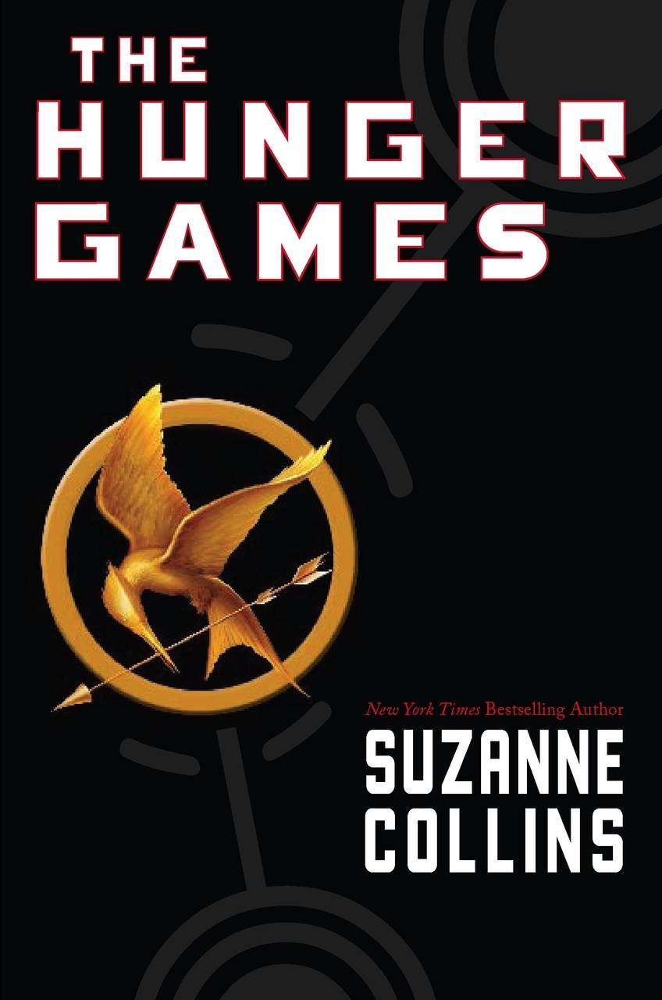
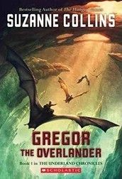
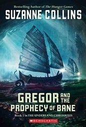
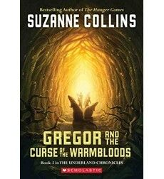
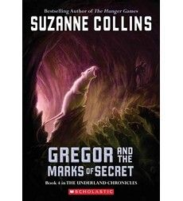
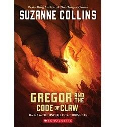
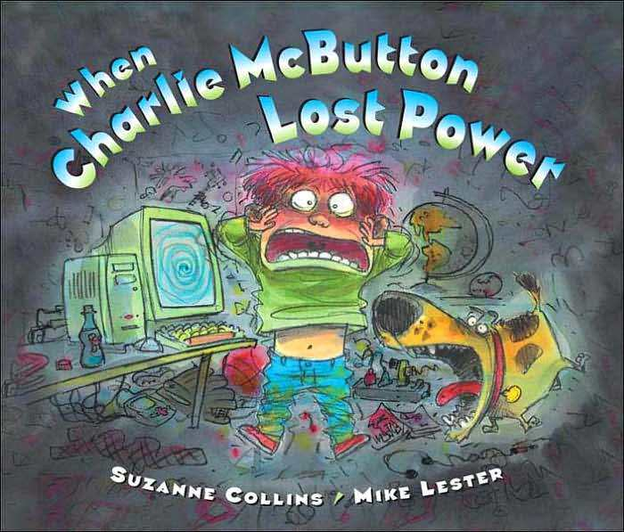
Quando amanhece o dia da 50ª edição dos Jogos Vorazes, o medo toma conta dos distritos de Panem. Neste Massacre Quaternário, o dobro de tributos será arrancado de seus lares. No Distrito 12, Haymitch Abernathy tenta não pensar nas próprias chances — tudo o que ele quer é sobreviver ao dia e ficar ao lado da garota que ama.
Na manhã da colheita que dará início à 10ª edição dos Jogos Vorazes, Coriolanus Snow, de 18 anos, vê sua única chance de alcançar a glória como mentor nos Jogos. A antes poderosa família Snow está em decadência, e o futuro deles depende da capacidade de Coriolanus superar seus colegas e conduzir o tributo vencedor à vitória.
Quando o pai de Suzy é enviado para lutar em uma guerra numa selva distante, ela precisa aprender a lidar com a saudade e a ausência dele.
Katniss Everdeen, a garota em chamas, sobreviveu — mesmo após a destruição de seu lar. Agora, rebeldes se levantam, novos líderes surgem e uma revolução começa a tomar forma.
Para o próprio choque de Katniss, ela acabou alimentando uma revolta que talvez não consiga mais controlar — e, no fundo, nem sabe se quer impedir isso. Enquanto ela e Peeta se preparam para a cruel Turnê da Vitória pelos distritos, o perigo aumenta ainda mais: se não convencerem todos de que estão verdadeiramente apaixonados, as consequências serão terríveis.
Katniss, uma garota de 16 anos, vive com a mãe e a irmã mais nova no distrito mais pobre de Panem, o que restou da América do Norte. Após uma guerra contra a Capital, os distritos foram derrotados e obrigados a enviar, todos os anos, um garoto e uma garota para os Jogos Vorazes — um evento televisionado onde a única regra é matar ou morrer. Quando sua irmã é sorteada, Katniss se oferece para ir em seu lugar.
Conheça Gregor, um garoto de Nova York que cai da lavanderia de seu prédio em um mundo subterrâneo fantástico chamado Underland. Ao lado de sua irmãzinha Boots, ele encontra criaturas gigantes que falam — como baratas, morcegos, aranhas e ratos — além de uma sociedade humana misteriosa. E, para a surpresa dele, todos já o estavam esperando…
Quando baratas gigantes sequestram Boots e a levam de volta ao Underland, Gregor parte para resgatá-la. Lá, ele descobre que os dois fazem parte da “Profecia de Bane”, que alerta sobre o perigo de um terrível rato branco. E adivinha quem terá a missão de destruí-lo?
Gregor e Boots precisam voltar ao Underland para encontrar a cura de uma praga mortal conhecida como a Maldição dos Sangues-Quentes. Dessa vez, a missão é ainda mais urgente, pois além de seus amigos do subterrâneo, alguém de sua própria família também foi infectado.
Gregor parte para investigar um mistério envolvendo os ratos do Underland, mas acaba descobrindo um segredo terrível. A história prepara o caminho para o quinto e último livro da série, Gregor and the Code of Claw.
Todos no Underland tentaram esconder de Gregor a Profecia do Tempo, mas ele logo descobre o motivo: ela prevê a morte do guerreiro. Com um exército de ratos se aproximando e sua mãe e irmã ainda em Regalia, Gregor precisará reunir coragem para proteger sua família e defender todo o Underland. Enquanto o tempo se esgota, ele encara segredos, uma nova princesa misteriosa e uma guerra capaz de mudar tudo para sempre.
Quando uma tempestade derruba a energia, o pequeno “império tecnológico” de Charlie McButton entra em colapso. Desesperado por pilhas para seus aparelhos, ele percebe que as únicas disponíveis estão no brinquedo favorito de sua irmãzinha. Agora, Charlie precisa decidir entre salvar seus eletrônicos ou perceber que talvez a diversão não dependa apenas de tecnologia.
Ficção Científica
SUNRISE ON THE REAPING
“Cruel, chocante e profundamente agridoce...”
— Booklist (crítica destacada)
THE BALLAD OF SONGBIRDS AND SNAKES
“Tanto uma história intensa e focada nos personagens quanto um conto de alerta… As reviravoltas e tragédias prendem o leitor, mesmo diante de um destino inevitavelmente trágico.”
— Kirkus Reviews (crítica destacada)
MOCKINGJAY
“...tão original e provocante quanto The Hunger Games. Uau.”
— Los Angeles Times
CATCHING FIRE
“...não decepciona quando mergulha na ação intensa e eletrizante que os leitores já esperam.” — Publishers Weekly (crítica destacada)
THE HUNGER GAMES
“...uma excelente história de aventura, suspense político e romance.”
— Booklist (crítica destacada)
Livro Ilustrado
YEAR OF THE JUNGLE
“Importante e necessário.”
— Kirkus Reviews (crítica destacada)
WHEN CHARLIE MCBUTTON LOST POWER
“Uma história inteligente e divertida em rimas.”
— School Library Journal
Fantasia
GREGOR THE OVERLANDER
“...os leitores provavelmente acharão o Underland um lugar incrivelmente fascinante.”
— Publishers Weekly (crítica destacada)
GREGOR AND THE PROPHECY OF BANE
“Uma ótima escolha para fãs de fantasia, incluindo leitores mais resistentes à leitura...”
— School Library Journal
GREGOR AND THE CURSE OF THE WARMBLOODS
“...uma continuação extremamente envolvente e fácil de ler...”
— The Horn Book Magazine
GREGOR AND THE MARKS OF SECRET
“...vai deixar os leitores sem fôlego...”
— Kirkus Reviews (crítica destacada)
GREGOR AND THE CODE OF CLAW
“...uma excelente aquisição para qualquer biblioteca.”
— VOYA
------------------------------------------------------------------------------------------------------------------------------------------------------------------------------------------------------------------------------------------------------------------------------------------------------------------------------------------------------------------------------------------------------------------------------------------------------------------------------------------------
Copyright © 2024 - Todos os direitos reservados
Desenvolvido por: Guilherme André Viana dos Santos
Gustavo Dias de Andrade